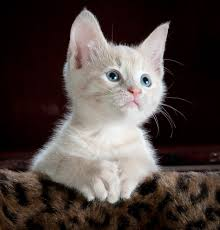
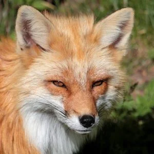

Pisica
Pisica de casă, pisica domestică sau mâța este un mamifer din
ordinul carnivorelor, familia Felidae, subfamilia Felinae. Este alături de oameni de peste 9500 ani și
în
prezent este cel mai cunoscut animal domestic în toată lumea. Pisica domestică este foarte apropiată de
pisica sălbatică europeană (Felis silvestris silvestris), ca și de pisica sălbatică africană (Felis
silvestris libyca), împreună formând o specie unică: Felis silvestris.

Câinele
Câinele este un descendent domesticit al lupului.
Denumit și câine domestic, acesta provine din lupii cenușii din Pleistocen astăzi dispăruți.
Câinele a fost prima specie domesticită de către om. Experții estimează că vânătorii-culegători au
domesticit câinii cu peste 15.000 de ani în urmă, înainte de dezvoltarea agriculturii.Datorită
asocierii lor îndelungate cu oamenii, câinii s-au extins la un număr mare de indivizi.

Vulpea
Vulpea este un mamifer omnivor, de dimensiune mică spre medie, încadrat sistematic în familia Canidae,
alături de lup, câine, șacal, enot ș.a.
Deși de obicei vulpea e considerată - automat - a fi roșcată, de fapt coloritul ei prezintă o mare
varietate (de la roșcat aprins până la alb și cenușiu).Vulpea este mai mică decât câinele obișnuit și
evident mai mică decât lupul. Are între 7 și 10 kg, rar mai mult.